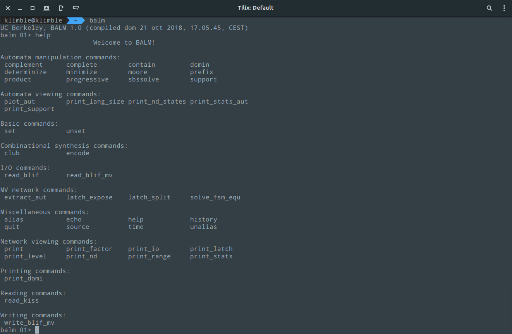

BALM
BALM (Berkeley Automata and Language Manipulation) aims at providing an experimental environment for efficient manipulation of finite automata in various application domains, e.g., synthesis, verification, control, etc. The environment features the most typical automata operations, such as determinization and state minimization, as well as some visualization capabilities, which rely on the powerful graph visualization software (like Graphviz). The applicability of BALM to finite-state machine synthesis is demonstrated by solving an unknown component problem formulated using language equations. 
Downloads
Available packages:Download Debian package
The source code is available in both tarball and zip:
Download source (.tar.gz) Download source (.zip)